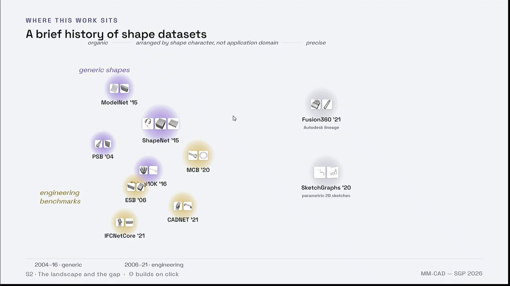
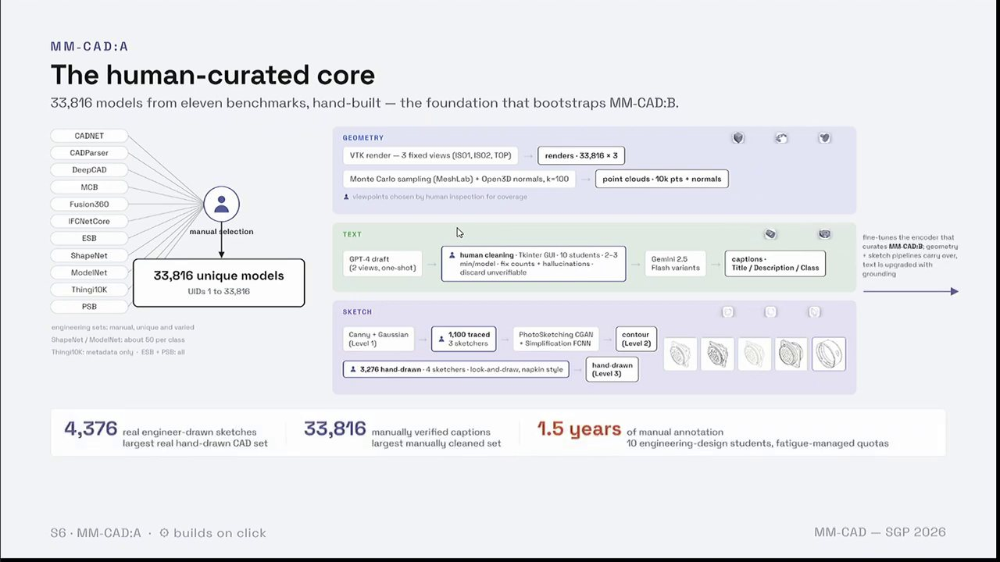
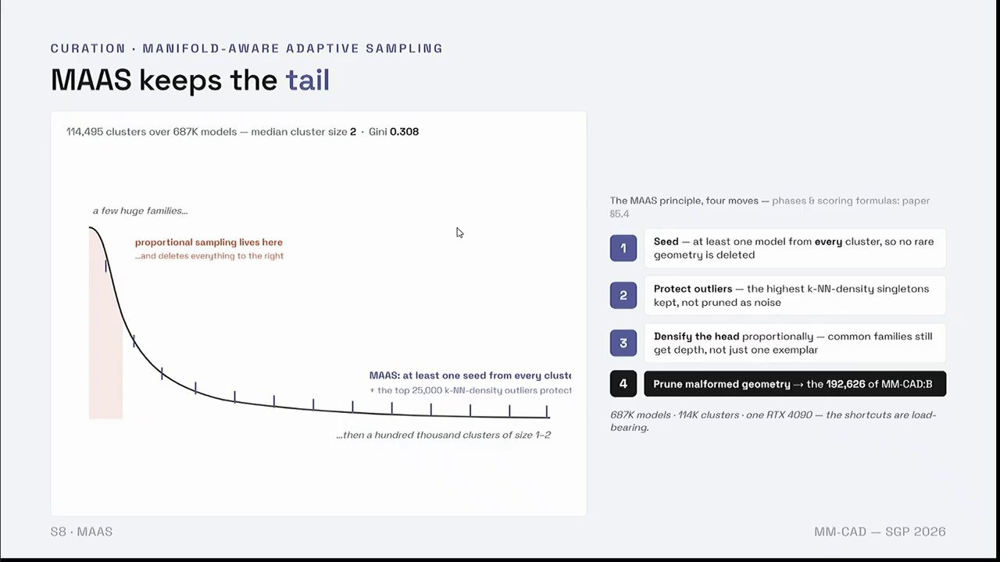
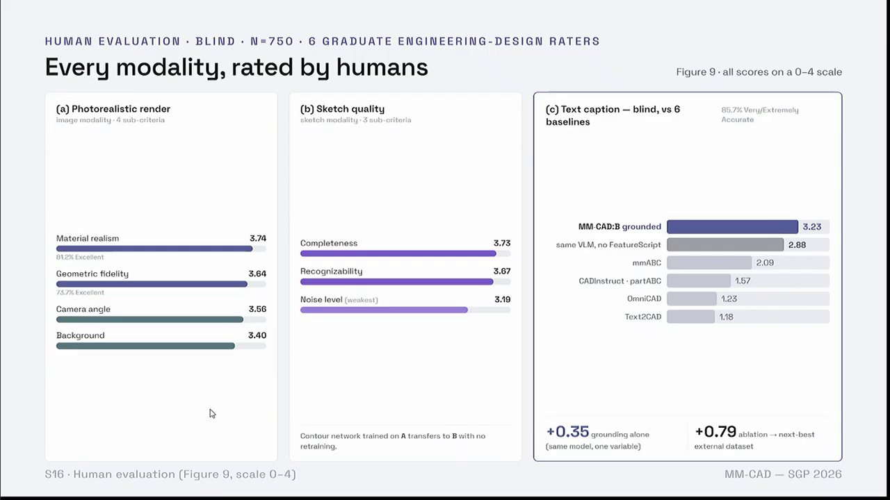

Why it matters
An engineer describes the same part in many ways: a sketch, a sentence, a photo, a scan, the CAD file. Software that helps with design has to connect them, for example to find the CAD model that matches a hand sketch. No public dataset had the same part in all of these forms at scale.
The idea
Build that dataset and release it. MM-CAD has 226K CAD models, each with its B-rep, a point cloud, text, sketches and images. Most were chosen from about a million so that rare shapes are kept. It is public, and Metafold 3D has used it in an independent benchmark.
1The problem
An engineer describes a part in several ways: a sketch, a sentence, a photo, a scan, the CAD file itself. A system that helps with design has to connect them, for example to find the CAD model that matches a hand sketch. Training that needs the same part in every form.
Existing CAD datasets each cover part of this. Some have geometry without text. Some have text written by a model and never checked by a person. None aligned five forms for the same part at this scale.


2What I built
| MM-CAD:A | MM-CAD:B | |
|---|---|---|
| Source | 11 public benchmarks, including MCB, Fusion 360, ESB, CADParser, ShapeNet and ModelNet | ABC, about 1M models |
| Models | 33,816 | 192,626 |
| How it was built | Selected and annotated by people | Deduplicated, clustered and sampled by pipeline |
| Split | 27,048 / 3,376 / 3,392 | 173,363 / 19,263, along semantic clusters |
MM-CAD:A is the human-curated core. Models were picked by hand from eleven benchmarks. Captions were drafted by a language model and then cleaned by people, and sketches were drawn and traced by people. The annotation took ten engineering-design students about a year and a half.
MM-CAD:B carries the scale. Each of its models has a STEP file (the neutral exchange format, holding the B-rep), a point cloud, text at three levels of detail, renders from three fixed views, contour sketches, and for 129,679 models a photorealistic image.




3How 192K models were chosen from a million
ABC holds about a million models, and many are near copies. Perceptual deduplication removed 282,852 of them (28.3%). The encoders were then fine-tuned on CAD so that distance in the embedding reflects engineering similarity.
A two-stage, geometry-aware hierarchical clustering grouped the 687,064 processed models into 114,495 clusters. The median cluster holds two models: a few product families are very large, and about a hundred thousand clusters hold one or two parts. Sampling in proportion to cluster size would keep the large families and delete the rare geometry.
Manifold-aware adaptive sampling (MAAS) does the opposite first. It takes at least one model from every cluster, protects outliers that would otherwise be pruned as noise, then adds depth to the large families in proportion, and finally removes malformed geometry.
4The benchmark
Five encoders, one per form, map into one shared embedding space, so a query in one form retrieves models in another. The contrastive objectives are Matryoshka-nested: a shorter prefix of each embedding still works for retrieval. The release also includes a 4,862-node taxonomy and interactive retrieval graphs.
The annotations were checked two ways. Cross-modal consistency was measured with CLIP, ViT and sentence-transformer models. People also rated each modality blind.


5Who uses it
Metafold 3D used MM-CAD in an independent, public shape-embedding benchmark. After SGP 2026 the dataset was shared with Autodesk Research's AI Lab. The dataset, code and trained checkpoints are public.
6The talk at SGP 2026
I presented the paper at the Symposium on Geometry Processing in Bern in July 2026. A Eurographics Widening Participation Scholarship funded the trip. The full recording is below.


7The limit it exposed
Building the dataset showed two things. Product families repeat, so most of a large CAD collection is a small number of designs with variations. And no dataset spoke the engineer's vocabulary. Both points lead to Abra-CAD, which recovers the counts and dimensions a designer would name.